Beauty is seen through a lens
Perspective matters.
All my photographs try to capture that
perspective, however subtle.
 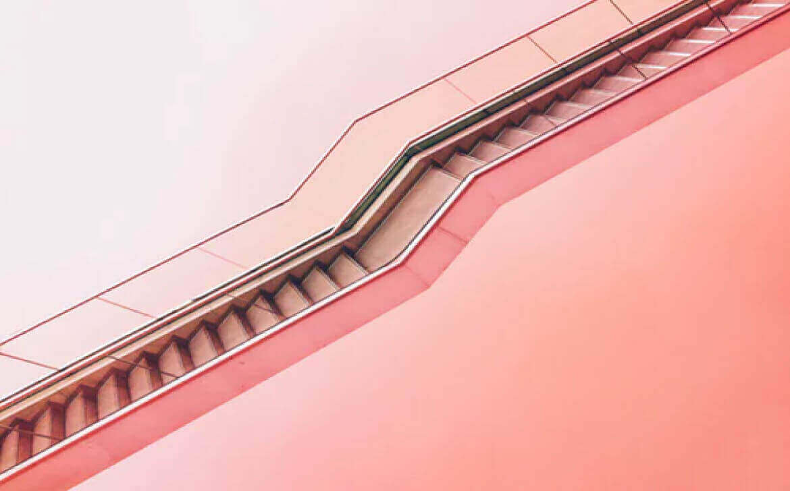
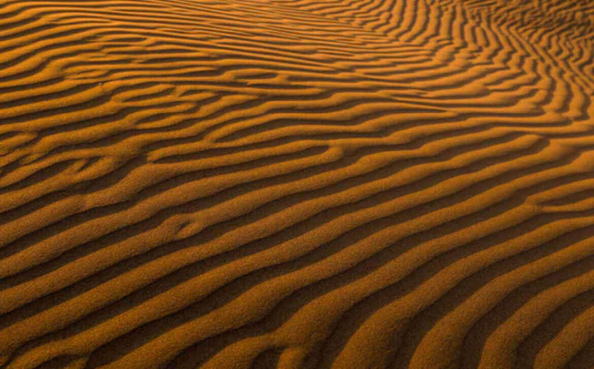
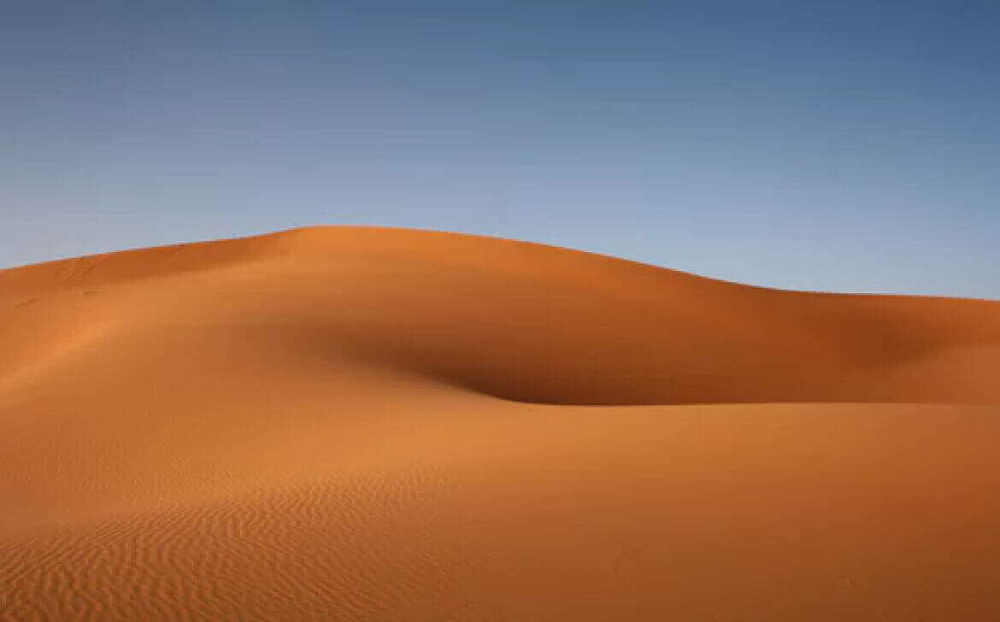
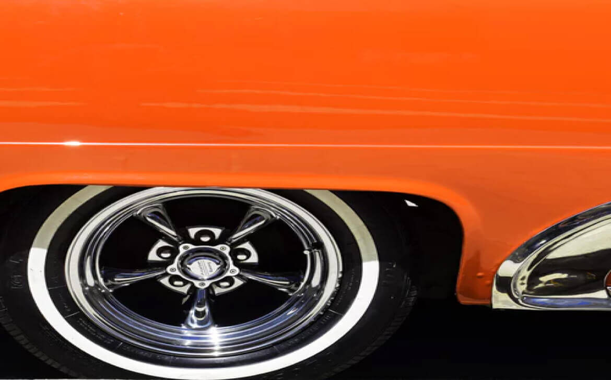
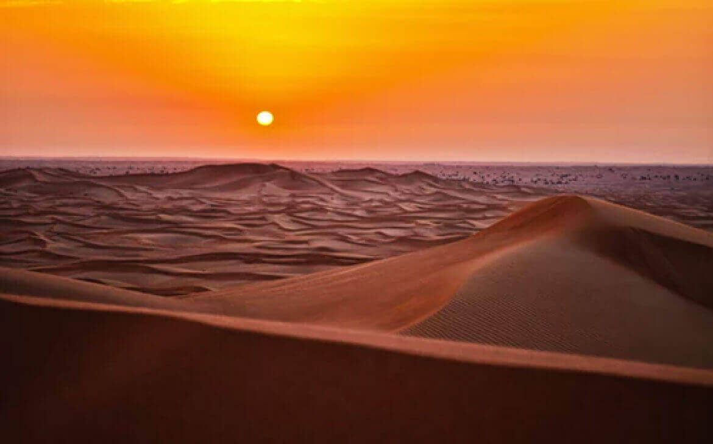
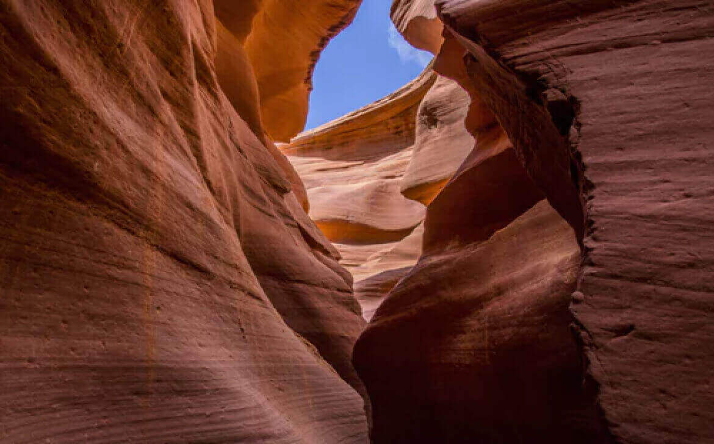
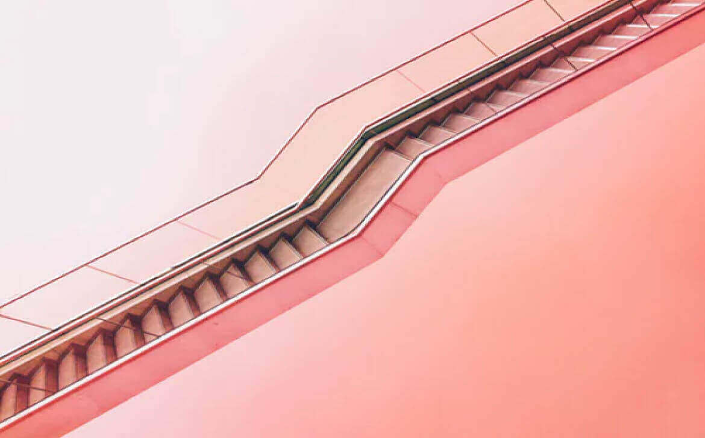
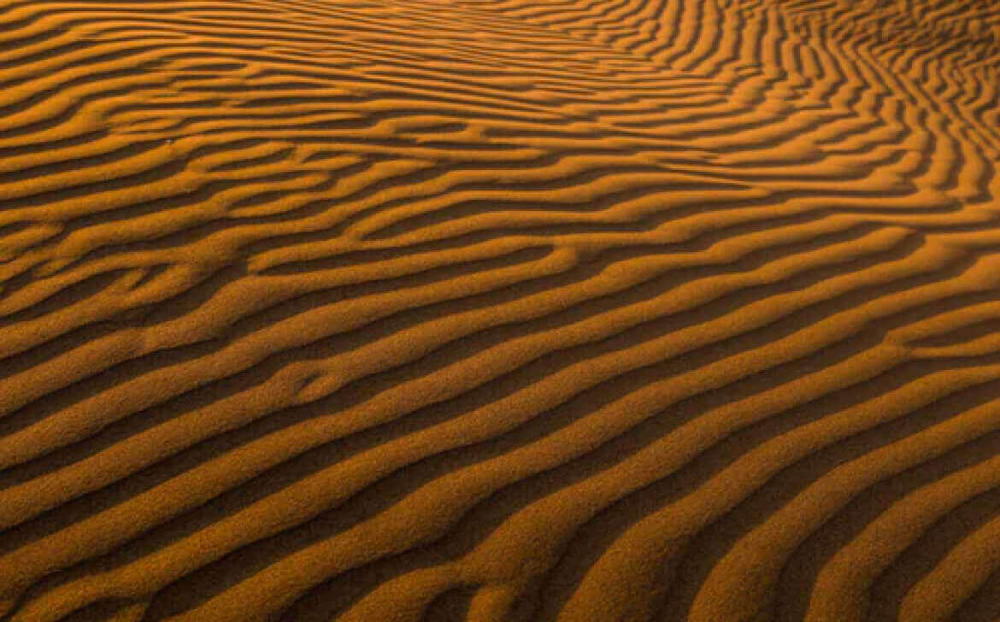
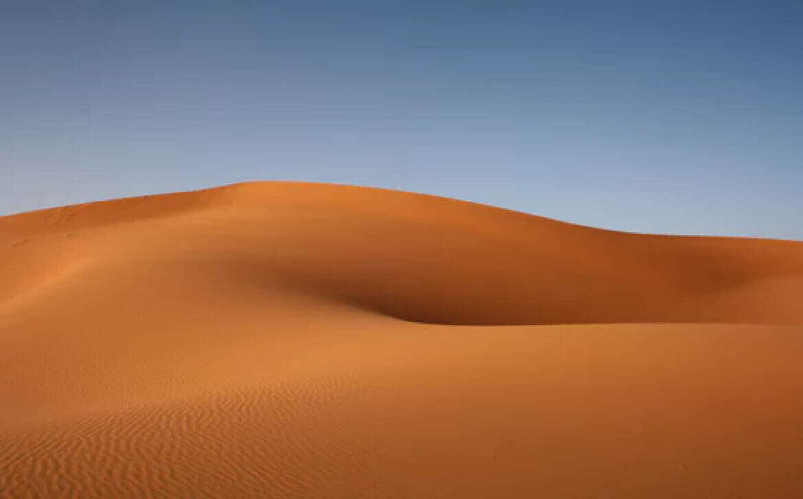
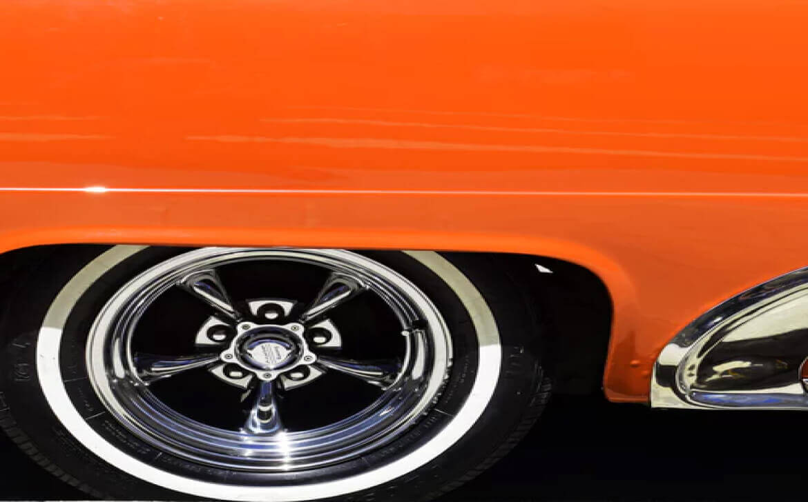
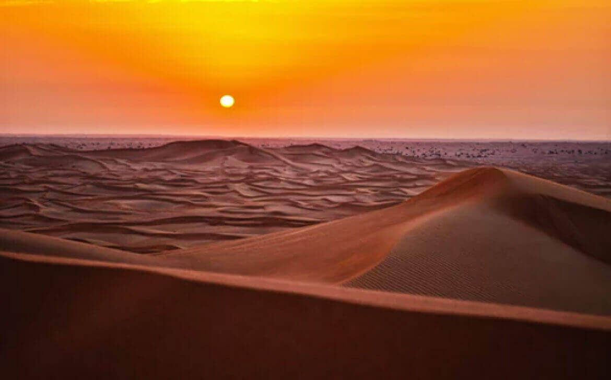
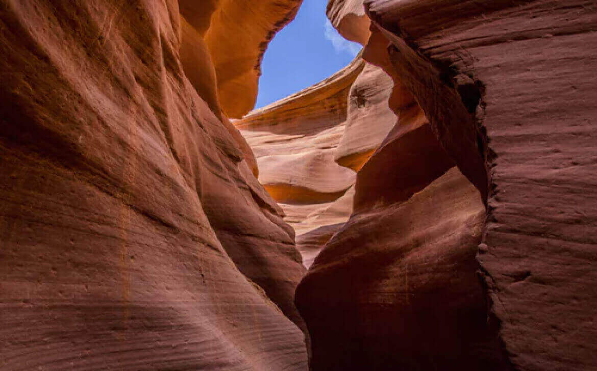
Date
July 2019
Camera
Canon EOS 1D Mark IV
Location
Morrocan Highlands
Lens
70mm f2.8 @ 1/16”
Mineral carvings
Deep in the deserts of Morroco, lies a dried-up valley, featuring some of the most exquisite rock formations, carved millions of years ago.
To truly experience these beautiful formations, one has to visit them in person. I hope my photos have managed to capture the sheer size – gravitas even – and spellbinding nature of these eroded walls.
Stay up-to-date with my updates
Photograf
The personal website of Jesse McJessesen, professional photographer.
Rust, pumpkin, tans, and spices.
July 15, 2019
Experiencing Japan
July 10, 2019